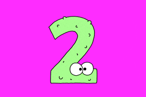

O número dois é a fundação de toda a lógica moderna e da própria existência, sendo o único número primo par do universo e a base absoluta do sistema binário (0 e 1) que permite que computadores, a internet e toda a tecnologia digital funcionem. Na biologia e na física, o dois dita o princípio da dualidade: a simetria bilateral que estrutura o corpo humano com dois olhos, dois ouvidos e dois hemisférios cerebrais, além das polaridades essenciais do cosmos, como dia e noite, matéria e antimatéria, e os polos magnéticos da Terra.
<-Voltar Avançar->